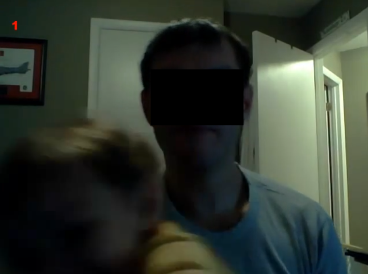
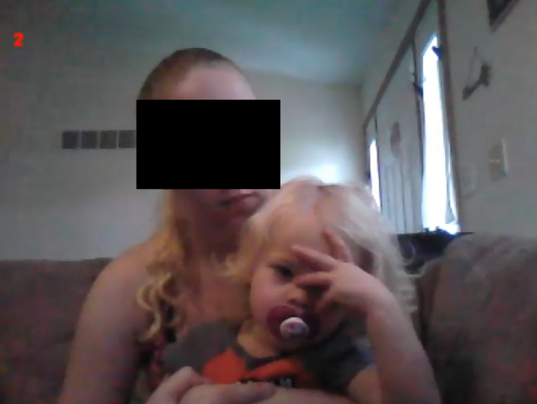
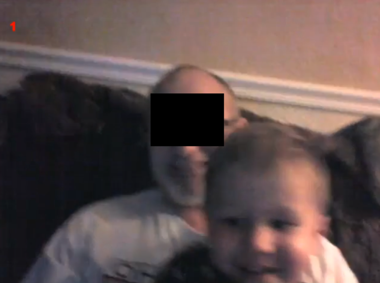
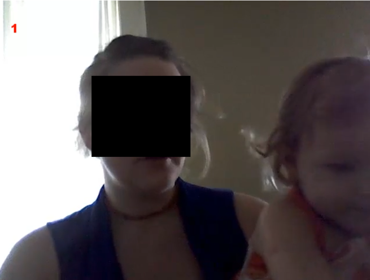
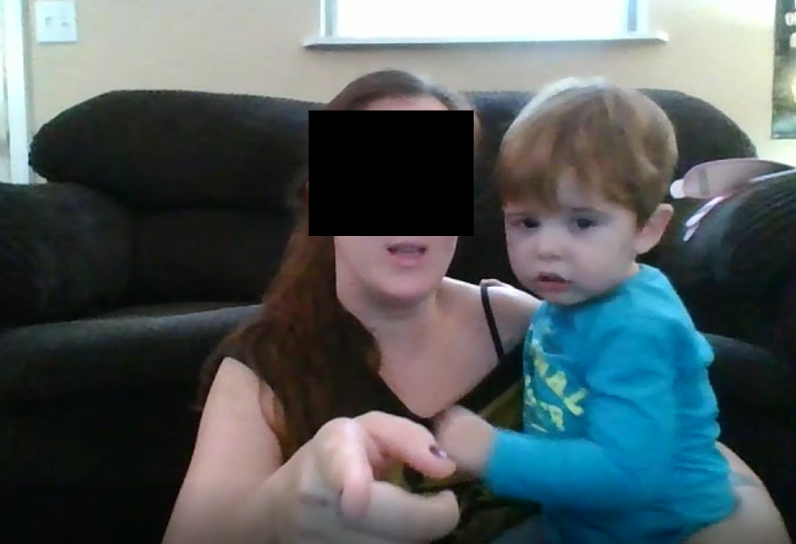
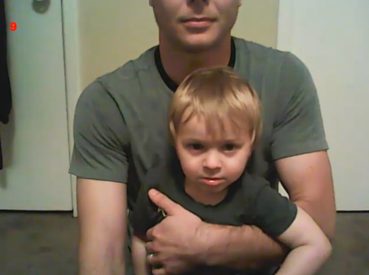

You and your baby will watch three clips from cartoons and live-action movies. Each clip is 3 minutes long. We will record your infant's looking behaviour via your webcam.
We need to see your infant's eyes in the webcam and so please conduct this study during daytime and make sure your infant faces a window/light source. Your child may be seated on your lap or in a baby seat close to the screen. If you keep your child on your lap, please try to keep your own movements to a minimum as not to influence your child's looking behaviour. If your child is seated in a baby seat, please sit somewhere behind your child to ensure that your child has maximum attention for the screen and is not distracted.
During the study, please try to refrain from interacting with your infant whenever possible. We are interested in infants' natural looking behaviour, so we ask you not to point at the screen or direct their gaze to the video in any other way.
Please ensure that:
| Incorrect: room is poorly lit; child participant is not the focus. |  | Incorrect: poor camera quality and distance from camera mean that the child's eyes are untrackable. |  |
| Incorrect: laptop held on lap, resulting in shaky, unusable footage. Caregiver reacting to the study, potentially influencing the child's reaction. |  | Incorrect: the participant is backlit, meaning their face is in shadow. As in example 1, the camera is centred on the caregiver, not the infant. |  |
| Incorrect: caregiver is influencing the infant’s attention to the stimuli. |  | Good: the room is well lit. The camera is focused on the child participant; it is also kept steady, and is a reasonable quality. The caregiver's face is predominantly out of shot. |  |